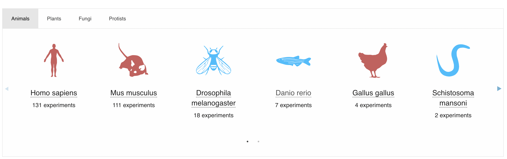

raw.counts <- Matrix::readMM('./localdata/E-MTAB-7117.aggregated_filtered_counts.mtx')Analyzing scRNA-seq Data – Dataset Acquisition
Work
Useful
Omics
Paper Replication
This was originally meant to be a whole-workflow blog post, but understanding dataset procurement is hard…
In this walkthrough, we’re going to start playing around with real scRNA-seq data. I had no end goal in mind when starting this post; let’s see what happens!
The Dataset
We’ll use the Single Cell Expression Atlas to find a suitable dataset to explore. The website has a nice design, and there’re a lot of species to choose from.

I chose to look at Danio rerio (Zebrafish) because it was the animal with the most experiments that I hadn’t really heard about before1. I didn’t want to look at plants/fungi/protists because they might require additional considerations I’m not aware of (especially protists).
<i> vs <em>
This is very tangential, but in trying to learn the right way to represent scientific names such as Danio rerio I stumbled onto a debate about <i> vs <em> (html tags to represent italics), and analogously about <b> vs <strong> (to represent bolds). In my investigation into this debate, I’ve encountered that <i>/<b> are to be used when there is no semantic emphasis on the words, whereas <em>/<strong> contain semantic emphasis (Lucero 2008). This unfortunately means I’ve been using them wrong 😅 - since I’ve just been <strong>-ing all my bolds even though I basically never bold for emphasis these days. (I’m not a very emphatic person).
I chose the dataset from the paper “Single-cell transcriptional analysis reveals innate lymphoid cell (ILC)-like cells in zebrafish” (Hernández et al. 2018), because it was one of the most recent but also not exceedingly large (<1000 cells).
Experimental Design
Before downloading the data, we want to check if it’s actually useful to us - is it mRNA, what type of cells are they, were specific genes targeted, etc. Since the previous blog posts were talking about the wetlab generation of the data, let’s do a deep dive into what they did. The paper (Hernández et al. 2018) is freely available online, and the pertinent information will be contained in the Materials and Methods section. The paper is the source of two datasets on the Single Cell Expression Atlas so we will have to keep that in mind when reading about the methods.
Sample Selection
The aim of this study was to characterised innate and adaptive lymphocytes in zebrafish in steady state and following the immune challenge, using scRNA-seq. Multiple zebrafish, either in steady state or exposed to immune challenge, were used to collect cells for sequencing.
– Study Design Subsection; Materials and Methods Section; Hernández et al. (2018)
A lymphocyte is a specific type of cell that is part of your immune system; B, T, and NK cells are all lymphocytes. We can also see that the experiment was done on multiple zebrafish, rather than just one - and that some were “exposed to immune challenge”, which I assume means they were made sick to try to trigger interesting processes in their immune system.
The paper goes into more depth into this immune challenge (it involves Vibrio anguillarum, a “fish pathogen” (details: Frans et al. 2011)), however this does not seem to be relevant for our dataset. The paper seems to refer to our dataset as the Smart-seq2 experiment, whereas the other dataset is the 10x experiment. The immune challenge was only applied to the 10x experiment. We can double-check this by comparing the sample characteristics of our dataset and the other dataset on the Single Cell Expression Atlas, noting that infect is not one of the experimental variables for our dataset.
A triple-check, if the above was not convincing enough2, can be found when we read the whole paper:
To allow easy retrieval of sequencing data from zebrafish innate and adaptive lymphocytes we generated a cloud repository (https://www.sanger.ac.uk/science/tools/lymphocytes/ lymphocytes/) with transcriptional profiles of over 14,000 single cells collected from healthy and immune challenged zebrafish using 10x genomics and Smart-seq2 methodology (please see Explanatory Note in Supplementary Material).
– “Single cell atlas of innate and adaptive lymphocytes in zebrafish” section; Hernández et al. (2018)
We can then track down this explanatory note3 to see what it has to say;
Available datasets includes Smart-seq2 data from kidney, thymus, spleen, guts and gills of healthy, unstimulated wild-type zebrafish as well as 10x datasets from gut of unstimulated zebrafish both wild-type and rag1-/- mutant and immune-challenged (V. anguillarum- or A. simplex-injected) rag1-/- mutant.
– Supplementary Material; Explanatory Note Hernández et al. (2018)
We know the 10x experiment contains over 10,000 cells, and experienced immune challenges. Ours doesn’t. Our dataset should be from multiple body parts (corroborated by the sample characteristics of our dataset) and the 10x dataset should only be from the gut (corroborated by the sample characteristics of the other dataset).
The above quote also points out that all our zebrafish were wild-type. Interestingly, the sample characteristics of our dataset do list multiple genotypes, including rag1-/- mutants. The quote seems to imply that rag1-/- is not “wild-type”, as does the rest of the paper. However, the rest of the paper does explicitly say that the Smart-seq2 data contains rag1-/- mutants, so I assume this was either an oversight by the authors or a minor misinterpretation on my part4. Either way, I’m satisfied with this understanding; we can move on to the tissue preparation.
About rag1-/- mutants
Well, maybe not move on just yet; I’m just a bit curious as to what a rag1-/- mutant is! According to “RAG1 Gene” (2017), it’s related to VDJ-recombination (something that was briefly mentioned, but not expanded on, in a prior blogpost)). It stands for “recombination activating gene 1”, and when it is absent it can really mess up your immune system as VDJ-recombination is essential for B and T cells to adapt to new pathogens. For a paper specifically on this mutation’s effects in zebrafish, see Hohn and Petrie-Hanson (2012) and Petrie-Hanson, Hohn, and Hanson (2009).
Tissue Preparation
Kidneys from heterozygote transgenic zebrafish either wild-type or rag1-/- mutant, were dissected and processed as previously described (Athanasiadis et al. 2017). The guts, spleens, gills and thymuses were dissected and placed in ice cold PBS/5% foetal bovine serum.
– FACS Sorting Subsection; Materials and Methods Section; Hernández et al. (2018)
Which gives us another paper to read! Also, I never thought I’d read the phrase “ice cold fetal bovine serum”…
A single kidney from heterozygote transgenic or wild-type fish was dissected and placed in ice cold PBS/5% foetal bovine serum.
– Single-Cell Sorting Subsection; Methods Section; Athanasiadis et al. (2017)
Despite being given another paper to read, it seems that the same dissection type was used for all organs. That reduces the amount of work for us!
Cell Isolation
They used FACS (Fluorescence-Activated Cell Sorting). There’s a brief overview of it available from “Fluorescence-Activated Cell Sorting (FACS)” (n.d.).
For [the] Smart-seq2 experiment individual cells were index sorted into 96 well plates using a BD Influx Index Sorter
– FACS Sorting Subsection; Materials and Methods Section; Hernández et al. (2018)
96
Why does the number 96 keep popping up??? I’ll never know.
Library Preparation and Sequencing
The Smart-seq2 protocol was used for whole transcriptome amplification and library preparation as previously described. Generated libraries were sequenced in pair-end mode on [a] Hi-Seq4000 platform.
– Plate-Based Single-Cell RNA processing Subsection; Materials and Methods Section; Hernández et al. (2018)
This is short and straight to the point. They say a bit more about sequencing later:
For the samples that were processed using the Smart-seq2 protocol, the reads were aligned to the zebrafish reference genome (Ensemble BioMart version 89) combined with the sequences for EGFP, mCherry, mhc2dab and ERCC spike-ins. Salmon v0.8.2 (Patro et al. 2017) was used for both alignment and quantification of reads with the default paired-end parameters, while library type was set to inward (I) relative orientation (reads face each other) with unstranded (U) protocol (parameter –l IU).
– Alignment and Quantification of Single-Cell RNA-Sequencing Data; Materials and Methods Section; Hernández et al. (2018)
Acquiring and Exploring the Dataset
The page for this dataset on the Single Cell Expression Atlas contains a download tab. We want the raw counts matrix (we don’t want to use the normalized counts, since we intend to recreate their analysis and that includes normalizing the counts ourselves!).
The file we’re interested in, after downloading and unzipping, is E-MTAB-7117.aggregated_filtered_counts.mtx. (The other files are important too; they’re the row and column names!) We can read the file in using R.
Let’s take a peak at this matrix to see what it’s like.
print(dim(raw.counts))
raw.counts[1:10, 1:10]
max(raw.counts)[1] 21797 96610 x 10 sparse Matrix of class "dgTMatrix"
[1,] . . . . . . . . . .
[2,] . . . . . . . . . .
[3,] . . . . . . . . . .
[4,] . . 48.000 77 . . . . . .
[5,] 1 680.8777 1151.611 1 . . . . . .
[6,] . . . . . . . . . .
[7,] . . . . . . . . . .
[8,] . . . . . 111 . . . .
[9,] . . . . . . . . . .
[10,] . . . . . . . . . .
292841
We can see that the matrix is 21,797 by 966 - thus, there are 21,797 genes in the dataset and each column corresponds to a specific cell.
Strangely, some values seem to be noninteger? Let’s consult the paper!
For each of the 542 single cells, counts reported by Salmon were transformed into normalised counts per million (CPM) and used for the further analysis. This was performed by dividing the number of counts for each gene with the total number of counts for each cell and by multiplying the resulting number by a factor of 1,000,000. Genes that were expressed in less than 1% of cells (e.g. 5 single cells with CPM > 1) were filtered out. In the final step we ended up using 16,059 genes across the 542 single cells. The scran R package (version 1.6.7) Lun, Bach, and Marioni (2016) was then used to normalise the data and remove differences due to the library size or capture efficiency and sequencing depth.
– Downstream Analysis of Smart-seq2 Data; Materials and Methods Section; Hernández et al. (2018)
This explains the non-integer values; there’s division involved in producing them.
However, we’ve found a new discrepancy! Why are there 966 cells in the dataset, when we should only have 542? Let’s read a bit more of the paper:
For the Smart-seq2 protocol transcript per million (TPM) values reported by Salmon were used for the quality control (QC). Wells with fewer than 900 expressed genes (TPM > 1) or having more than either 60% of ERCC or 45% of mitochondrial content were annotated as poor quality cells. As a result, 322 cells failed QC and 542 single cells were selected for the further study.
– Quality Control of Single-Cell Data; Materials and Methods Section; Hernández et al. (2018)
So 322 cells failed quality control - but that still only brings us up to 864 cells, 102 too few. Let’s download the experiment design table from the Single Cell Expression Atlas, as we’ll need it for later anyways (it contains non-gene info about the samples) and because it contains info on sample quality via the fields “well information” and “single cell quality”. The name of the file once downloaded is ExpDesign-E-MTAB-7117.tsv.
sample.data <- read.table("./localdata/ExpDesign-E-MTAB-7117.tsv", sep='\t', header=TRUE)
head(sample.data)| Assay | Sample.Characteristic.organism. | Sample.Characteristic.Ontology.Term.organism. | Sample.Characteristic.strain. | Sample.Characteristic.Ontology.Term.strain. | Sample.Characteristic.age. | Sample.Characteristic.Ontology.Term.age. | Sample.Characteristic.developmental.stage. | Sample.Characteristic.Ontology.Term.developmental.stage. | Sample.Characteristic.sex. | ⋯ | Sample.Characteristic.single.cell.quality. | Sample.Characteristic.Ontology.Term.single.cell.quality. | Sample.Characteristic.cluster. | Sample.Characteristic.Ontology.Term.cluster. | Factor.Value.genotype. | Factor.Value.Ontology.Term.genotype. | Factor.Value.organism.part. | Factor.Value.Ontology.Term.organism.part. | Factor.Value.single.cell.identifier. | Factor.Value.Ontology.Term.single.cell.identifier. | |
|---|---|---|---|---|---|---|---|---|---|---|---|---|---|---|---|---|---|---|---|---|---|
| <chr> | <chr> | <chr> | <chr> | <lgl> | <chr> | <lgl> | <chr> | <chr> | <chr> | ⋯ | <chr> | <lgl> | <chr> | <lgl> | <chr> | <lgl> | <chr> | <chr> | <chr> | <lgl> | |
| 1 | ERR2722968 | Danio rerio | http://purl.obolibrary.org/obo/NCBITaxon_7955 | AB | NA | 6 month | NA | adult | http://www.ebi.ac.uk/efo/EFO_0001272 | male | ⋯ | OK | NA | 1 | NA | Tg(lck:EGFP) | NA | kidney | LCK_kidney_A12 | NA | |
| 2 | ERR2722969 | Danio rerio | http://purl.obolibrary.org/obo/NCBITaxon_7955 | AB | NA | 6 month | NA | adult | http://www.ebi.ac.uk/efo/EFO_0001272 | male | ⋯ | OK | NA | 1 | NA | Tg(lck:EGFP) | NA | kidney | LCK_kidney_A4 | NA | |
| 3 | ERR2722970 | Danio rerio | http://purl.obolibrary.org/obo/NCBITaxon_7955 | AB | NA | 6 month | NA | adult | http://www.ebi.ac.uk/efo/EFO_0001272 | male | ⋯ | OK | NA | 1 | NA | Tg(lck:EGFP) | NA | kidney | LCK_kidney_B1 | NA | |
| 4 | ERR2722971 | Danio rerio | http://purl.obolibrary.org/obo/NCBITaxon_7955 | AB | NA | 6 month | NA | adult | http://www.ebi.ac.uk/efo/EFO_0001272 | male | ⋯ | OK | NA | 1 | NA | Tg(lck:EGFP) | NA | kidney | LCK_kidney_B2 | NA | |
| 5 | ERR2722972 | Danio rerio | http://purl.obolibrary.org/obo/NCBITaxon_7955 | AB | NA | 6 month | NA | adult | http://www.ebi.ac.uk/efo/EFO_0001272 | male | ⋯ | OK | NA | 1 | NA | Tg(lck:EGFP) | NA | kidney | LCK_kidney_C10 | NA | |
| 6 | ERR2722973 | Danio rerio | http://purl.obolibrary.org/obo/NCBITaxon_7955 | AB | NA | 6 month | NA | adult | http://www.ebi.ac.uk/efo/EFO_0001272 | male | ⋯ | OK | NA | 1 | NA | Tg(lck:EGFP) | NA | kidney | LCK_kidney_C11 | NA |
dim(sample.data)- 1056
- 33
dim(sample.data[which(
sample.data['Sample.Characteristic.single.cell.quality.'] == "OK"
& sample.data['Sample.Characteristic.well.information.'] == "single cell"
),])- 976
- 33
filtered <- sample.data[which(
sample.data['Sample.Characteristic.cluster.'] != "unknown"
),]dim(filtered)- 542
- 33
The mystery keeps compounding! For some reason, we start with 90 extra rows (cells) in this dataset! We can filter out the obviously bad entries, but we still have 10 extra rows. There’s a field “cluster” which we can use to get the post-filtered value of 542, although I’m fairly certain that these clusters were created after the analysis rather than as part of the data creation, hence why there’s only 542.
Since we know the names of all ‘names’ of all the samples in our experiment design table, we can compare this with the list of row names for our gene count matrix to hopefully shed some light on what’s going wrong:
# Grab the lists of genes in the experiment
# and in the gene counts, for comparison
experiment.assays <- sample.data$Assay
gene.assays <- read.table(
'./localdata/E-MTAB-7117.aggregated_filtered_counts.mtx_cols'
)$V1# Get the list of genes that appear in the experiment data
# but not the gene counts
discrepancies <- setdiff(experiment.assays, gene.assays)
length(discrepancies)
90
# Now get the experiment info of the 10 of these cells that
# aren't filtered out by our previous filtering method
extra.cells <- sample.data[
which(sapply(experiment.assays, `%in%`, discrepancies)),
]
extra.cells <- extra.cells[
which(
extra.cells['Sample.Characteristic.single.cell.quality.'] == "OK"
),
]# Show all columns. There's probably a better way,
# but oh well...
# (I've hidden the outputs of this code block on the blog,
# because it's just a bunch of ugly, unenlightening tables.)
extra.cells[,1:10]
extra.cells[,11:20]
extra.cells[,21:30]
extra.cells[,31:33]The above contains the 10 outstanding cells. Frustratingly, there doesn’t seem to be any reason I can find as to why these cells were excluded at this stage!
To summarize:
- The website reports 966 cells
- The gene count table also reports 966 cells
- The experiment table reports 1056 cells
- Flitering the experiment table yields 976 cells
- The paper reports 864 cells pre-quality control
This isn’t an uncommon occurance; in fact, every time I’ve read a paper like this (which, admittedly, is only 3ish times) I’ve been unable to get a consistent answer on how many cells were actually used! It’s a major nuisance.
We’ll pick up where we left off in the next blog post. While annoying, this discrepancy isn’t fatal - we can perform quality control on the 976 cells we get from filtering.
References
Athanasiadis, E. I., J. G. Botthof, H. Andres, L. Ferreira, P. Lio, and A. Cvejic. 2017. “Single-cell RNA-sequencing uncovers transcriptional states and fate decisions in haematopoiesis” 8 (1): 2045.
“Fluorescence-Activated Cell Sorting (FACS).” n.d. SinoBiological. https://www.sinobiological.com/category/fcm-facs-facs.
Frans, I., C. W. Michiels, P. Bossier, K. A. Willems, B. Lievens, and H. Rediers. 2011. “Vibrio anguillarum as a fish pathogen: virulence factors, diagnosis and prevention.” Journal of Fish Diseases 34 (9): 643–61.
Hernández, P. P., P. M. Strzelecka, E. I. Athanasiadis, D. Hall, A. F. Robalo, C. M. Collins, P. Boudinot, J. P. Levraud, and A. Cvejic. 2018. “Single-cell transcriptional analysis reveals ILC-like cells in zebrafish.” Science Immunology 3 (29).
Hohn, C., and L. Petrie-Hanson. 2012. “Rag1-/- mutant zebrafish demonstrate specific protection following bacterial re-exposure.” PLoS One 7 (9): e44451.
Lucero, Sophia. 2008. “HTML5: <B> and <i> Tags Are Going to Be Useful (Read: Semantic) Again!” https://stellify.net/html5-b-and-i-tags-are-going-to-be-useful-read-semantic-again/.
Lun, A. T., K. Bach, and J. C. Marioni. 2016. “Pooling across cells to normalize single-cell RNA sequencing data with many zero counts.” Genome Biol 17 (April): 75.
Patro, R., G. Duggal, M. I. Love, R. A. Irizarry, and C. Kingsford. 2017. “Salmon provides fast and bias-aware quantification of transcript expression.” Nat Methods 14 (4): 417–19.
Petrie-Hanson, L., C. Hohn, and L. Hanson. 2009. “Characterization of rag1 mutant zebrafish leukocytes.” BMC Immunology 10 (February): 8.
“RAG1 Gene.” 2017, February. https://medlineplus.gov/genetics/gene/rag1/.
Footnotes
Apparently it does seem to be one of the ‘useful’ animals in biology - you learn new things every day! Shoutout to Sam’s blog for introducing me to being able to use footnotes.↩︎
It wasn’t really, at least for me - I like to be sure!↩︎
I found it on NIH; warning - you’ll have to download a 16MB file to read it!↩︎
I’m leaning towards misinterpretation, as I don’t see why wild populations would be incapable of having a rag1-/- mutation - unless maybe the rag1-/- mutants used in the study were specifically bred in the lab?↩︎